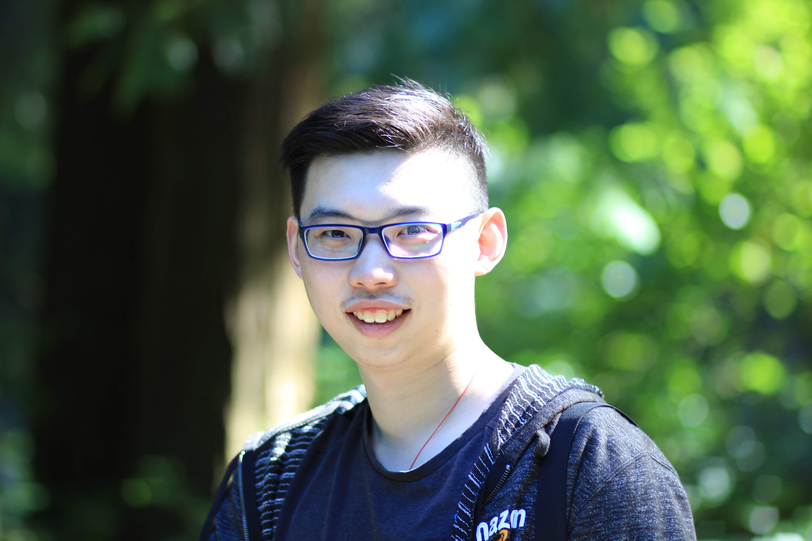
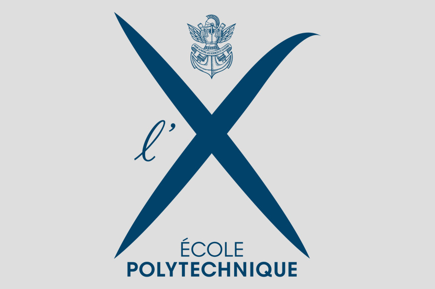

Experience
-
Research Scientist · Meta Superintelligence Labs (2019–Present)
- Leading Data Governance and Privacy initiatives for LLM training
- Tech Lead for Recommendation Systems in Virtual Reality
- Delivered Meta's first production Generative Adversarial Network system
-
PhD, Mathematics · University of Southern California (2015–2019)
-

Visiting Researcher · École Polytechnique (2014–2015) -
 BSc, Mathematics · Tsinghua University (2010–2014)
BSc, Mathematics · Tsinghua University (2010–2014)
Publications
- Best Paper Award